This guide explains the parts of the Observator Automatic Weather Station system (version 1.0.4) and how to install it: the software on the station PC that receives the GMX551's readings, stores them and serves the portal.
It is for whoever installs and looks after that PC. Day-to-day use of the portal is in the User Manual.
The Observator Automatic Weather Station software runs on one Windows PC at the site. That PC receives the GMX551's readings, stores them, and serves the portal that everyone opens in a web browser. No internet connection is needed.
This guide explains the parts of the system and how they fit together, then walks through the installation. Day-to-day use of the portal is in the User Manual.
It describes version 1.0.4.
The system has five parts. Three of them are software on the station PC, each running as its own Windows service.
| Component | Where it runs | What it does |
|---|---|---|
| GMX551 sensor | On the mast | Measures wind, temperature, humidity, pressure, dew point, solar radiation and rain. Sends one line of readings every second, in Gill ASCII or NMEA 0183 |
| Network converter | Beside the sensor | Turns the sensor's serial line into a network connection to the station PC |
| API and sensor stream | Station PC (Windows service) | Listens for the sensor on port 4000. Checks every reading, builds the one-minute and ten-minute values, stores them, and answers the portal's requests on port 3200 |
| Database server | Station PC (Windows service) | MongoDB. Keeps every reading, user, setting and audit entry. Readings are never deleted |
| Web server (the portal) | Station PC (Windows service) | Serves the portal on port 3201 to any browser on the site network |
Nothing else is needed: no internet, no cloud service and no separate server. Everyone else opens the portal in a web browser such as Chrome or Edge.
The sensor's readings enter the PC on port 4000 and are stored by the API. The database (27017) and the API (3200) answer only inside the PC. Only two ports are open to the site network: 4000 for the converter and 3201 for the portal.
The program and the data are kept in two separate folders, so an upgrade or an uninstall never touches the readings.
| Folder | What is in it |
|---|---|
C:\Observator | The program, its tools (status.cmd, backup-now.cmd, upgrade.cmd and others) and a copy of the guides. Replaced by an upgrade |
C:\ObservatorData\config\observator.env | The settings, in one file |
C:\ObservatorData\db | The database |
C:\ObservatorData\logs | Logs from each service and each install, rotated automatically |
C:\ObservatorData\backups | Backups taken with backup-now.cmd, and the one an upgrade takes first |
C:\ObservatorData\uploads | The uploaded logo |
The settings and data folders open for administrators only, because the settings file holds the keys that protect sign-in.
The three services run as Windows' built-in Local Service account, not as an administrator. Each starts with Windows and restarts by itself after a crash.
Installation takes about 15 minutes, once, on the one PC that will be the station's server.
| You need | Why |
|---|---|
| Windows 10 or 11, 64-bit | The software is built for it (Windows Server 2019/2022 also work) |
| An administrator account | Setup installs Windows services and firewall rules |
| 4 GB memory, 20 GB free disk | Readings are never deleted; the data grows by about 0.5 GB a year |
| A fixed IP address | The converter, and everyone's browser, find the PC by it |
| Never sleep, time sync on | Every reading is time-stamped by this PC's clock |
| The setup program | observator-weather-1.0.4-setup.exe. No internet is needed |
Find the PC's IP address. Press the Windows key, type cmd and press Enter. Type ipconfig and press Enter. The line IPv4 Address is the one, for example 192.168.1.20.
The setup program asks four questions, then installs and starts everything by itself. For most sites, keep every default.
Double-click observator-weather-1.0.4-setup.exe. Windows asks whether to let it make changes: choose Yes. Then select Next.
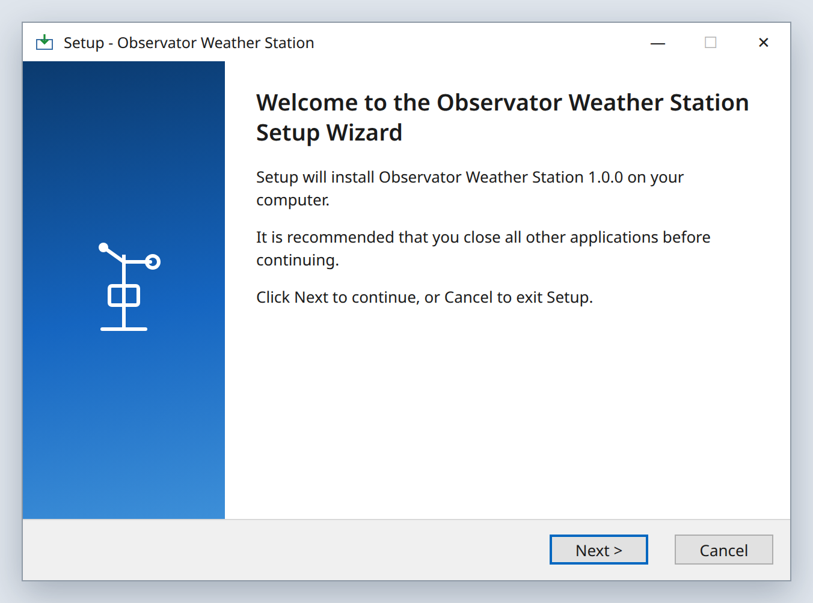
Where the program goes. Keep the default, C:\Observator, and select Next.
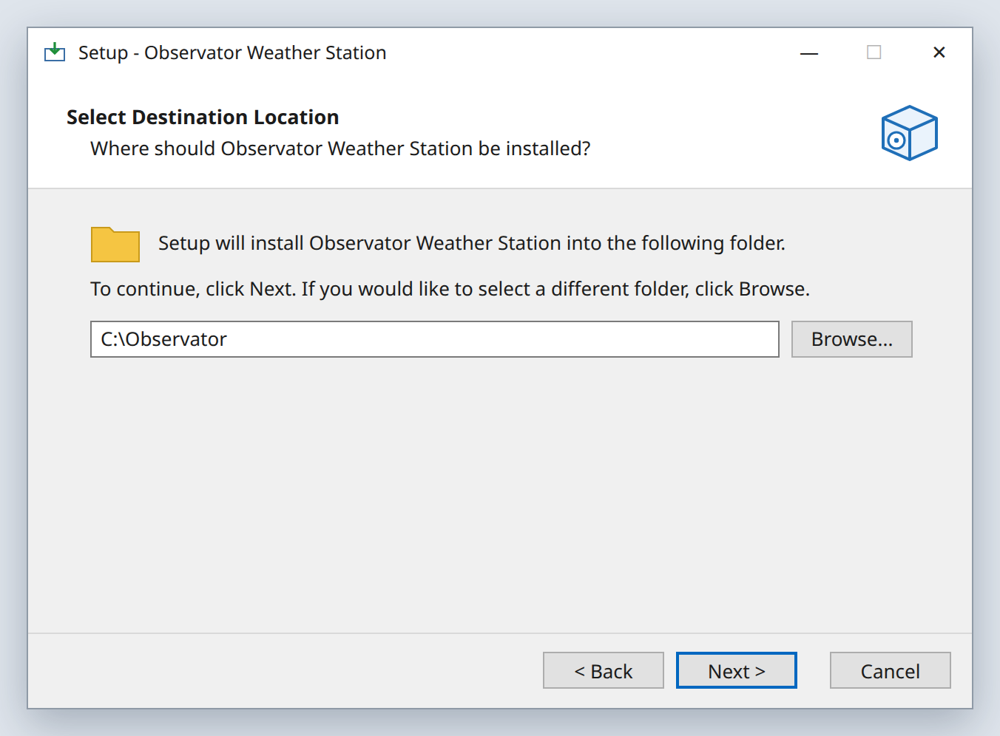
Where the readings, settings and logs are kept. Keep the default, C:\ObservatorData, and select Next. Upgrades and uninstalling never touch this folder. It must not be inside the program folder; setup refuses if it is.
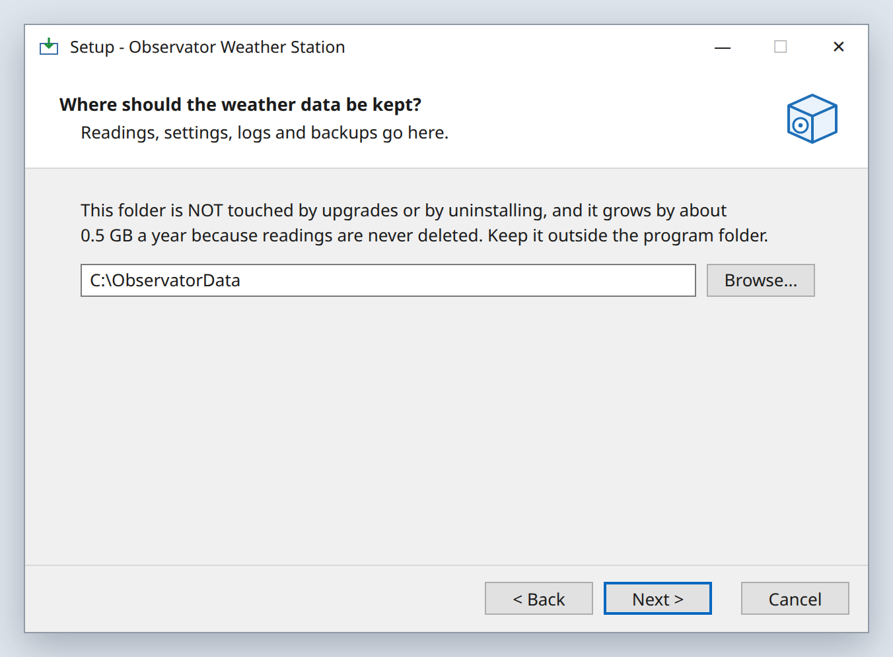
Type the email address of the person who will sign in first and set everyone else up. It does not have to be a real mailbox: the PC sends no email. Select Next. The password is asked for later, in its own window, so it is never written down on the PC.
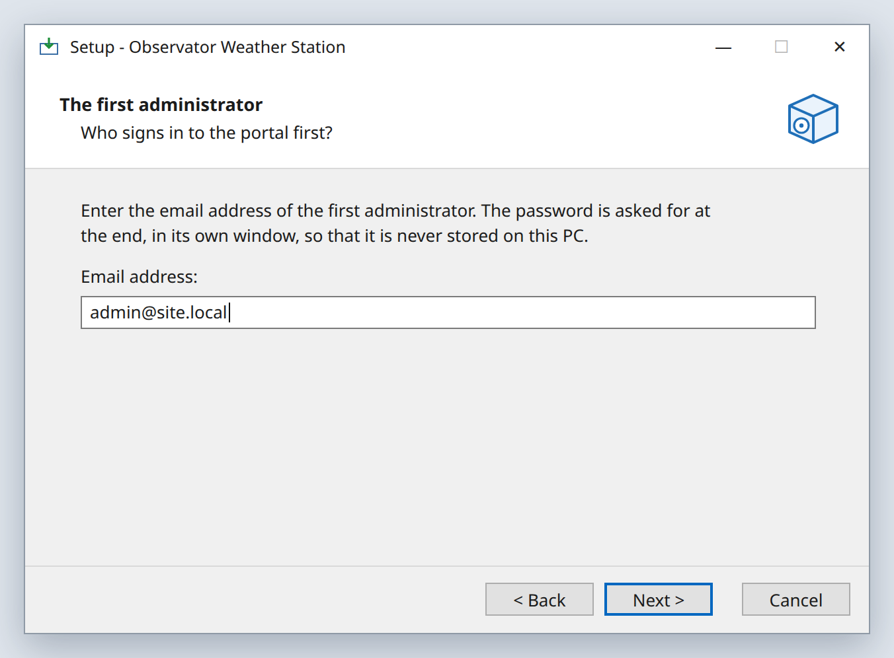
How the GMX551's readings reach this PC. For most sites, change nothing and select Next.
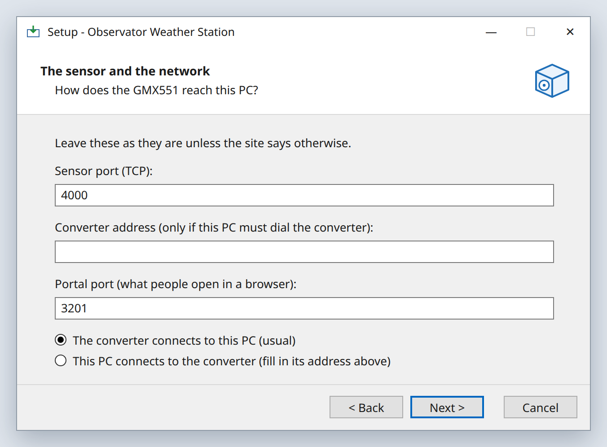
| Setting | What to put |
|---|---|
| Sensor port | 4000. The converter sends the readings to this port |
| Converter address | Leave it empty, unless you choose This PC connects to the converter |
| Portal port | 3201. People open http://<this PC's IP>:3201 |
| Converter connects to this PC | The usual choice. Then set the converter to send to this PC's IP, port 4000 |
| This PC connects to converter | Only if the converter can only wait to be called. Then type the converter's IP address |
The wizard shows where it will install. Select Install. Copying the program takes a minute or two.
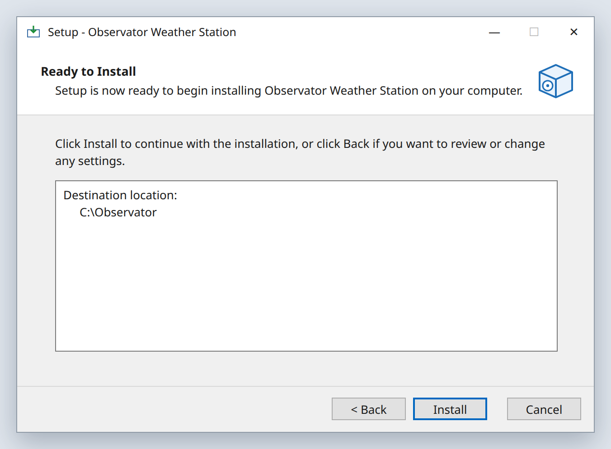
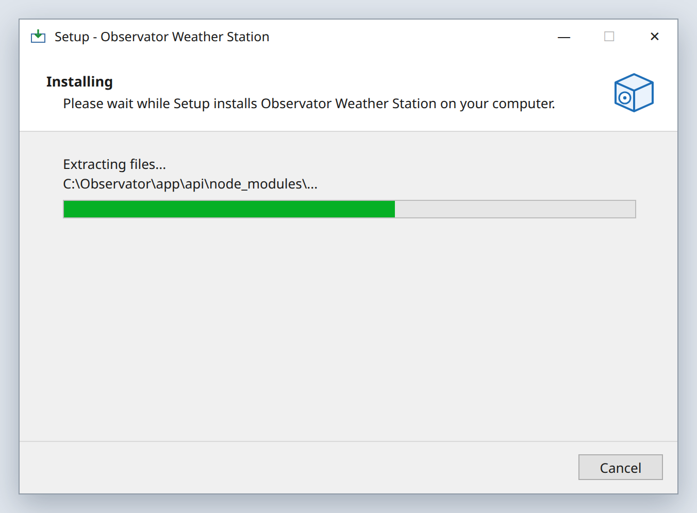
A blue PowerShell window opens. It checks the PC, then asks for the first administrator's password, at least 8 characters, typed twice.
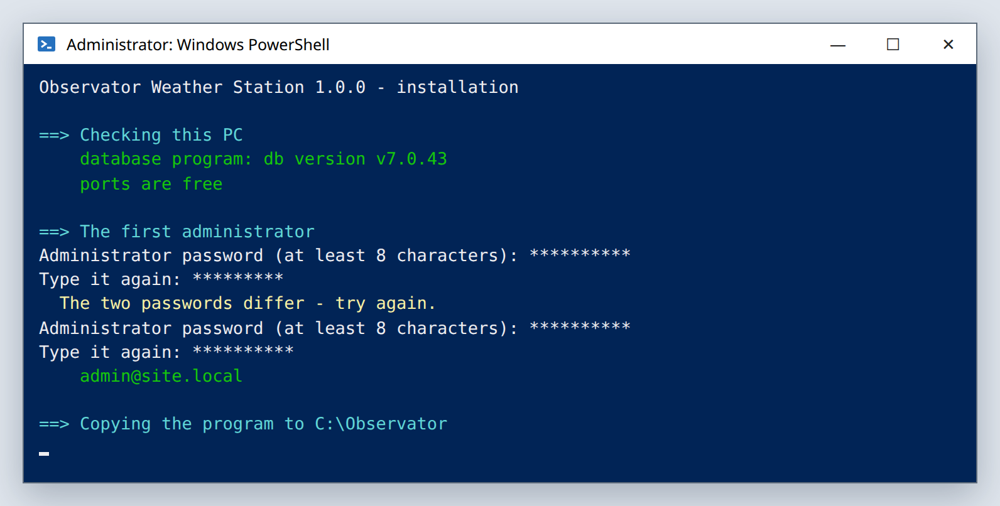
The same window carries on by itself. Do not close it while it is working.
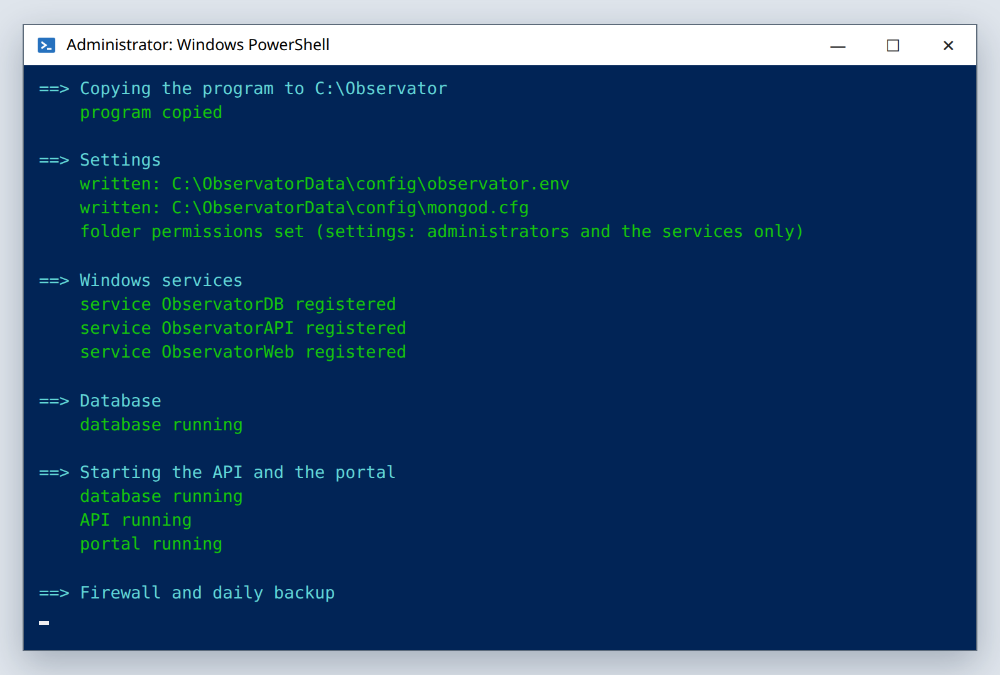
It writes the settings, creates the three Windows services (database, API and sensor stream, web portal), starts each one and checks it answers, and opens the two ports in the Windows firewall for the local network. When it is finished, the window closes by itself.
Select Finish. The software is now in C:\Observator and starts by itself whenever the PC starts. The setup program can be deleted.
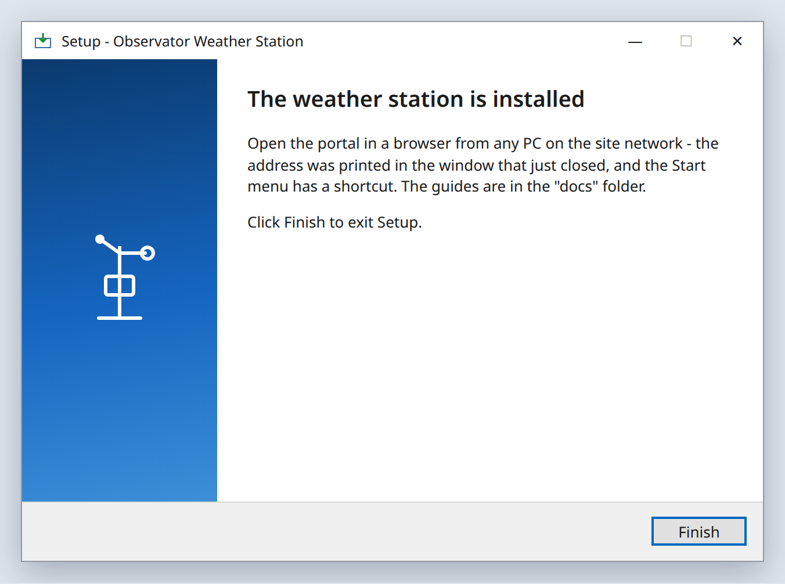
Two things remain: open the portal, and point the converter at the PC.
On the station PC, or any computer on the same network, open a web browser and go to http://<this PC's IP address>:3201, for example http://192.168.1.20:3201. On the station PC itself, http://localhost:3201 works too, and the Start menu has a Weather station portal shortcut.
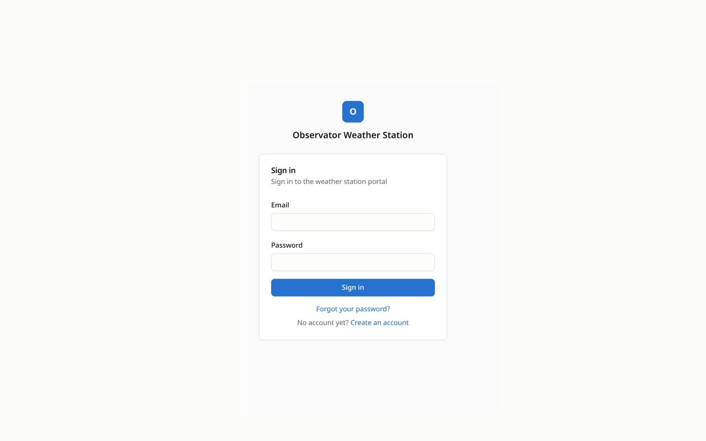
Sign in with the email from step 4 and the password from step 7. Then open System in the menu. Everything should be green except the sensor stream, until the converter is set up.
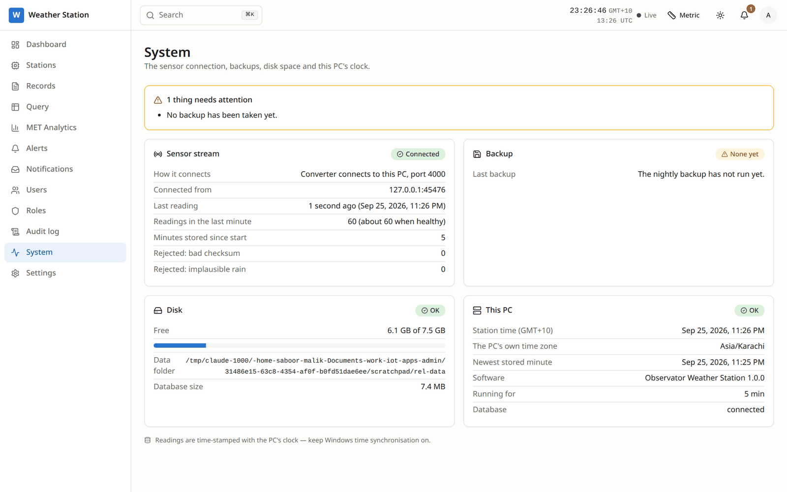
The GMX551 is wired to a serial-to-network converter. In the converter's own settings page:
| Setting | Value |
|---|---|
| Mode | TCP Client (sometimes called active or connect mode) |
| Destination IP | This PC's IP address, for example 192.168.1.20 |
| Destination port | 4000 |
| Serial | Must match the GMX551. Gill's default is 19200 baud, 8 data bits, no parity, 1 stop bit. A sensor set to NMEA usually uses 4800 or 9600 baud |
The software reads Gill ASCII and NMEA 0183, with nothing to set. Within a minute, System shows the sensor stream as Connected with about 60 readings a minute, and the Dashboard's wind dial starts moving every second.
If the converter can only be a TCP Server, the PC calls it instead. Set the converter to TCP Server on port 4000. Then, in the portal, open System → Sensor stream → Change connection, choose This PC connects to the converter, type the converter's IP address and port, and select Save and connect.
The master administrator (the one created in step 4) sees Weather station — Stop / Start on the portal's System page.
To restart the services themselves, open Services (Win+R, type services.msc) and restart the three Observator Weather services, or restart the PC.
| Tool | What it does |
|---|---|
status.cmd | Shows whether the services, the sensor and the disk are healthy |
backup-now.cmd | Takes a backup now, into C:\ObservatorData\backups |
restore.cmd | Puts a backup back |
reset-password.cmd | Sets a user's password, at this PC |
upgrade.cmd | In a new release's folder: upgrades, keeping all data |
uninstall.cmd | Removes the software, keeping the data |
Unpack the new release anywhere except C:\Observator, then double-click its upgrade.cmd. It backs up the database first, keeps the old program as C:\Observator.previous, installs the new one and checks it starts. If anything fails, it puts the previous version back and starts it. The data folder is not touched.
Use Settings → Apps → Observator Weather Station → Uninstall. It removes the services and firewall rules and keeps the data in C:\ObservatorData. Installing again with the same data folder carries on with all of it.
If something is wrong, the PowerShell window stays open with SETUP STOPPED in red and the reason underneath.
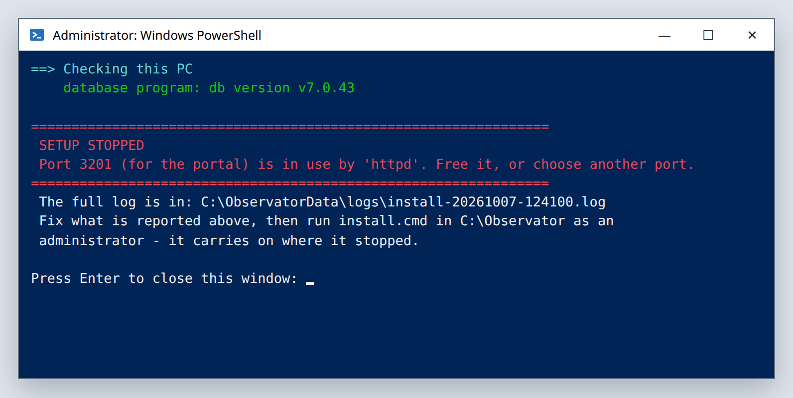
C:\Observator, right-click install.cmd and choose Run as administrator. It carries on from where it stopped, keeping the settings you chose.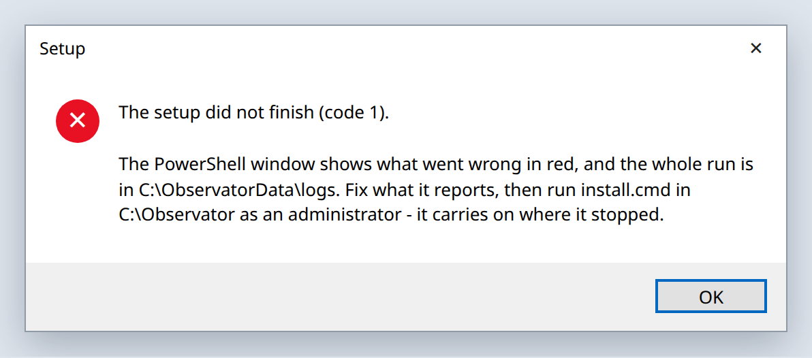
| The red line says | What to do |
|---|---|
| Port 3201 … is in use | Another program uses the portal's port. Stop it, or run setup again with another portal port |
| Port 4000 … is in use | The same, for the sensor port |
| … lacks AVX | The PC's processor is too old for the database. Use a newer PC |
| … did not start | The database, API or portal did not start. Send us the log file it names, from C:\ObservatorData\logs |
| Already installed in … | It is already installed. To update it, use the new release's upgrade.cmd |
Every run is logged in C:\ObservatorData\logs\install-<date>-<time>.log. Send that file if you ask us for help.